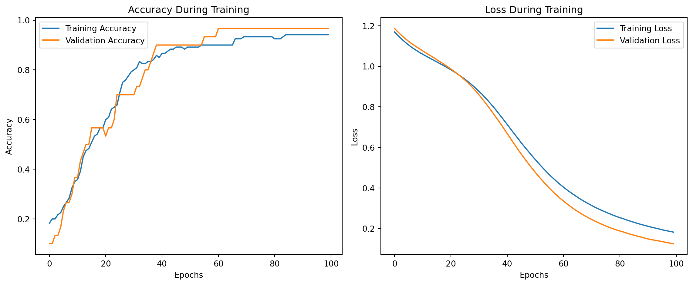

The Iris dataset is a classic dataset in machine learning, widely used for classification problems. It consists of 150 samples from three species of Iris flowers: Iris-setosa, Iris-versicolor, and Iris-virginica. For each sample, four features are provided:
Sepal Length (cm)
Sepal Width (cm)
Petal Length (cm)
Petal Width (cm)
The goal is to classify the species of a given flower based on its features. The dataset is simple and small, making it an excellent starting point for exploring machine learning algorithms such as the Multilayer Perceptron (MLP).
3.1.1 Why Use MLP for Iris Dataset?
An MLP is a feedforward artificial neural network that can learn complex patterns in data. Using an MLP for the Iris dataset provides an opportunity to:
Understand how neural networks can classify multi-class data.
Explore the strengths and limitations of MLPs in small datasets.
Experiment with performance measures, such as accuracy, precision, recall, and confusion matrices, in a classification problem.
3.1.2 Problem Setting
In this task: 1. Input Features: The four numerical features (sepal length, sepal width, petal length, petal width).
Output Labels: The flower species, encoded as integers:
Iris-setosa → 0
Iris-versicolor → 1
Iris-virginica → 2
Objective: Train an MLP to classify the flower species based on input features.
3.1.3 Outline of Exploration
This exploration will include:
Data Preprocessing: Normalizing feature values and encoding labels.
Model Building: Designing an MLP using Keras for multi-class classification.
Model Training and Evaluation: Measuring the model’s performance using metrics like accuracy and confusion matrices.
Visualization: Interpreting results through performance plots.
This foundational task demonstrates the power of neural networks in multi-class classification while highlighting the practical workflow of MLP implementation.
Solution:
Below is the step-by-step code to solve the Iris dataset classification problem using an MLP model:
Step 1: Load and Explore the Iris Dataset
import numpy as npimport pandas as pdfrom sklearn.datasets import load_iris# Load the Iris datasetiris = load_iris()X = iris.data # Input features: Sepal Length, Sepal Width, Petal Length, Petal Widthy = iris.target # Target labels: 0 (Setosa), 1 (Versicolor), 2 (Virginica)# Dataset overviewprint(f"Features:\n{iris.feature_names}")print(f"Classes:\n{iris.target_names}")print(f"Shape of X: {X.shape}, Shape of y: {y.shape}")
import seaborn as snsimport matplotlib.pyplot as pltimport pandas as pd# Convert dataset to a DataFrameiris_df = pd.DataFrame(data=np.column_stack((X, y)), columns=iris.feature_names + ["target"])iris_df['target'] = iris_df['target'].astype(int)iris_df['species'] = iris_df['target'].map({0: 'setosa', 1: 'versicolor', 2: 'virginica'})# Correlation matrixcorrelation_matrix = iris_df.iloc[:, :-2].corr()plt.figure(figsize=(8, 6))sns.heatmap(correlation_matrix, annot=True, cmap='coolwarm', fmt=".2f", cbar=True)plt.title('Correlation Matrix of Features')plt.show()
# Pair plot to visualize distributions over classessns.pairplot(iris_df, hue='species', diag_kind='kde', palette='Set2')plt.suptitle('Pair Plot of Features Colored by Target Class', y=1.02)plt.show()
# Group by target class and calculate statisticsgrouped_stats = iris_df.groupby('species').agg(['mean', 'std', 'min', 'max'])print("Summary Statistics of Features by Class:")print(grouped_stats)
Summary Statistics of Features by Class:
sepal length (cm) sepal width (cm) \
mean std min max mean std
species
setosa 5.006 0.352490 4.3 5.8 3.428 0.379064
versicolor 5.936 0.516171 4.9 7.0 2.770 0.313798
virginica 6.588 0.635880 4.9 7.9 2.974 0.322497
petal length (cm) petal width (cm) \
min max mean std min max mean
species
setosa 2.3 4.4 1.462 0.173664 1.0 1.9 0.246
versicolor 2.0 3.4 4.260 0.469911 3.0 5.1 1.326
virginica 2.2 3.8 5.552 0.551895 4.5 6.9 2.026
target
std min max mean std min max
species
setosa 0.105386 0.1 0.6 0.0 0.0 0 0
versicolor 0.197753 1.0 1.8 1.0 0.0 1 1
virginica 0.274650 1.4 2.5 2.0 0.0 2 2
# Boxplots for each feature by target classplt.figure(figsize=(12, 8))for i, feature inenumerate(iris.feature_names): plt.subplot(2, 2, i+1) sns.boxplot(x='species', y=feature, data=iris_df, palette='Set2') plt.title(f'Distribution of {feature} by Target Class') plt.xticks(rotation=45)plt.tight_layout()plt.show()
C:\Users\SIJUKSWAMY\AppData\Local\Temp\ipykernel_21016\451241665.py:5: FutureWarning:
Passing `palette` without assigning `hue` is deprecated and will be removed in v0.14.0. Assign the `x` variable to `hue` and set `legend=False` for the same effect.
sns.boxplot(x='species', y=feature, data=iris_df, palette='Set2')
C:\Users\SIJUKSWAMY\AppData\Local\Temp\ipykernel_21016\451241665.py:5: FutureWarning:
Passing `palette` without assigning `hue` is deprecated and will be removed in v0.14.0. Assign the `x` variable to `hue` and set `legend=False` for the same effect.
sns.boxplot(x='species', y=feature, data=iris_df, palette='Set2')
C:\Users\SIJUKSWAMY\AppData\Local\Temp\ipykernel_21016\451241665.py:5: FutureWarning:
Passing `palette` without assigning `hue` is deprecated and will be removed in v0.14.0. Assign the `x` variable to `hue` and set `legend=False` for the same effect.
sns.boxplot(x='species', y=feature, data=iris_df, palette='Set2')
C:\Users\SIJUKSWAMY\AppData\Local\Temp\ipykernel_21016\451241665.py:5: FutureWarning:
Passing `palette` without assigning `hue` is deprecated and will be removed in v0.14.0. Assign the `x` variable to `hue` and set `legend=False` for the same effect.
sns.boxplot(x='species', y=feature, data=iris_df, palette='Set2')
from scipy.stats import f_oneway# ANOVA for features with target classanova_results = {}for feature in iris.feature_names: groups = [iris_df[iris_df['species'] == species][feature] for species in iris.target_names] f_stat, p_val = f_oneway(*groups) anova_results[feature] = {'F-statistic': f_stat, 'p-value': p_val}# Display resultsanova_results_df = pd.DataFrame(anova_results).Tprint("ANOVA Results:")print(anova_results_df)
ANOVA tests whether the mean of each feature significantly differs among the target classes. Features with low p-values (< 0.05) are strongly correlated with the target class.
Step 2: Preprocess the Data
from sklearn.model_selection import train_test_splitfrom sklearn.preprocessing import StandardScaler, OneHotEncoder# Split data into training and testing setsX_train, X_test, y_train, y_test = train_test_split(X, y, test_size=0.2, random_state=42)# Standardize the input featuresscaler = StandardScaler()X_train = scaler.fit_transform(X_train)X_test = scaler.transform(X_test)# One-hot encode the target labelsencoder = OneHotEncoder(sparse_output=False) y_train = encoder.fit_transform(y_train.reshape(-1, 1))y_test = encoder.transform(y_test.reshape(-1, 1))
Step 3: Build the MLP Model
import tensorflow as tffrom tensorflow.keras.models import Sequentialfrom tensorflow.keras.layers import Dense# Build the MLP modelmodel = Sequential([ Dense(8, activation='relu', input_shape=(X_train.shape[1],)), # Hidden layer 1 Dense(8, activation='relu'), # Hidden layer 2 Dense(y_train.shape[1], activation='softmax') # Output layer for multi-class classification])# Compile the modelmodel.compile(optimizer='adam', loss='categorical_crossentropy', metrics=['accuracy'])# Summary of the modelmodel.summary()
C:\Users\SIJUKSWAMY\AppData\Local\Programs\Python\Python312\Lib\site-packages\keras\src\layers\core\dense.py:87: UserWarning: Do not pass an `input_shape`/`input_dim` argument to a layer. When using Sequential models, prefer using an `Input(shape)` object as the first layer in the model instead.
super().__init__(activity_regularizer=activity_regularizer, **kwargs)
import matplotlib.pyplot as plt# Plot training and validation accuracyplt.figure(figsize=(12, 5))# Accuracy plotplt.subplot(1, 2, 1)plt.plot(history.history['accuracy'], label='Training Accuracy')plt.plot(history.history['val_accuracy'], label='Validation Accuracy')plt.title('Accuracy During Training')plt.xlabel('Epochs')plt.ylabel('Accuracy')plt.legend()# Loss plotplt.subplot(1, 2, 2)plt.plot(history.history['loss'], label='Training Loss')plt.plot(history.history['val_loss'], label='Validation Loss')plt.title('Loss During Training')plt.xlabel('Epochs')plt.ylabel('Loss')plt.legend()plt.tight_layout()plt.show()

Step 7: Save and Reload the Model for Future Predictions
# Save the modelmodel.save('iris_mlp_model.h5')# Reload the modelloaded_model = tf.keras.models.load_model('iris_mlp_model.h5')# Predict on new datanew_sample = np.array([[5.1, 3.5, 1.4, 0.2]]) # Example inputnew_sample = scaler.transform(new_sample)predicted_class = np.argmax(loaded_model.predict(new_sample), axis=1)print(f"Predicted Class: {iris.target_names[predicted_class[0]]}")
WARNING:absl:You are saving your model as an HDF5 file via `model.save()` or `keras.saving.save_model(model)`. This file format is considered legacy. We recommend using instead the native Keras format, e.g. `model.save('my_model.keras')` or `keras.saving.save_model(model, 'my_model.keras')`.
WARNING:absl:Compiled the loaded model, but the compiled metrics have yet to be built. `model.compile_metrics` will be empty until you train or evaluate the model.